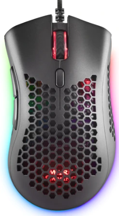

🛡️ Recomendaciones reales desde 2017
â Análisis imparciales por expertos
🛡️ Recomendaciones reales desde 2017
â Análisis imparciales por expertos

Contenido actualizado en mayo de 2025
Soy Carlos López, analista con más de 15 años de experiencia probando ratones gaming. En esta guÍa verás una comparativa real con los mejores modelos de ratón Mars Gaming que he probado personalmente en juegos, edición y uso diario. Si estás pensando en la marca Mars Gaming para comprar un ratón fiable, ergonómico y económico, esta página es justo lo que necesitas. Esta guÍa incluye enlaces de afiliado sin coste adicional para ti.
Si lo que buscas son los mejores ratones gaming de 2025 sin importar la marca, tienes esta otra guÍa de compra.
| Imagen | Modelo | Lo mejor | A tener en cuenta | Comprar |
|---|---|---|---|---|
 |
Mars Gaming MMW | 🔋 Inalámbrico con buena autonomÍa 🖱️ Peso muy ligero âš¡ Plug & Play sin software 🮠DPI hasta 3200 |
🯠Sensor básico para gaming casual | Ver en Amazon |
| MM55 Blanco | 🪶 55g de peso 💨 Sensor 12800 DPI 🎛️ Switches HUANO 💡 RGB ventilado |
🔌 Cableado, aunque flexible | Ver en Amazon | |
|  | MMEX | 🯠Sensor PixArt 3389PRO â±ï¸ Switches ópticos 🪶 Diseño HIVE 🧠Personalizable |
💸 Para jugadores exigentes | Ver en Amazon |
| ERGO VERTI | 🧠Diseño vertical 🔋 Inalámbrico 2.4GHz 🖱️ Sensor 3200 DPI 🧲 Pro-Grip |
🮠No apto para eSports | Ver en Amazon | |
| MMR Translúcido | 💡 RGB translúcido 🪶 58g ⚡ Sensor 12800 DPI 🔌 Cable flexible |
🮠No tiene software dedicado | Ver en Amazon | |
 |
MMWERGO | 🧠Ergonómico 🔋 Inalámbrico 2.4GHz 🎛️ Switches KAILH 🖱️ 3200 DPI |
⚙️ Sin iluminación RGB | Ver en Amazon |
 |
MMPRO | 🯠Sensor 10000 DPI 💡 RGB efectos 🧠Muy cómodo 🔌 Cable trenzado |
⚙️ Software básico | Ver en Amazon |
 |
MMW3 | 🪶 Ultraligero panal 🔋 Inalámbrico ⚡ RGB configurable 🔌 Recarga USB-C |
📦 Sin base de carga | Ver en Amazon |
| MMGLOW | 💡 RGB 360º 🯠10000 DPI 🖱️ Clic firme ⚙️ Diseño llamativo |
🮠Más estético que competitivo | Ver en Amazon | |
| MM-XT BLACK 9B | 🖱️ 9 botones 🯠10000 DPI 🧠Diseño cómodo 💡 LED configurable |
🮠Mejor para productividad/MMO | Ver en Amazon |
Lo mejor:
🔋 Inalámbrico con buena autonomÍa
🖱️ Peso muy ligero
âš¡ Plug & Play sin software
🮠DPI hasta 3200
A tener en cuenta:
🯠Sensor básico para gaming casual
Lo mejor:
🪶 55g de peso
💨 Sensor 12800 DPI
🎛️ Switches HUANO
💡 RGB ventilado
A tener en cuenta:
🔌 Cableado, aunque flexible
Lo mejor:
🯠Sensor PixArt 3389PRO
â±ï¸ Switches ópticos
🪶 Diseño HIVE
🧠Personalizable
A tener en cuenta:
💸 Para jugadores exigentes
Lo mejor:
🧠Diseño vertical
🔋 Inalámbrico 2.4GHz
🖱️ Sensor 3200 DPI
🧲 Pro-Grip
A tener en cuenta:
🮠No apto para eSports
Lo mejor:
💡 RGB translúcido
🪶 58g
âš¡ Sensor 12800 DPI
🔌 Cable flexible
A tener en cuenta:
🮠No tiene software dedicado
Lo mejor:
🧠Ergonómico
🔋 Inalámbrico 2.4GHz
🎛️ Switches KAILH
🖱️ 3200 DPI
A tener en cuenta:
⚙️ Sin iluminación RGB
Lo mejor:
🯠Sensor 10000 DPI
💡 RGB efectos
🧠Muy cómodo
🔌 Cable trenzado
A tener en cuenta:
⚙️ Software básico
Lo mejor:
🪶 Ultraligero panal
🔋 Inalámbrico
âš¡ RGB configurable
🔌 Recarga USB-C
A tener en cuenta:
📦 Sin base de carga
Lo mejor:
💡 RGB 360º
🯠10000 DPI
🖱️ Clic firme
⚙️ Diseño llamativo
A tener en cuenta:
🮠Más estético que competitivo
Lo mejor:
🖱️ 9 botones
🯠10000 DPI
🧠Diseño cómodo
💡 LED configurable
A tener en cuenta:
🮠Mejor para productividad/MMO
Un ratón gaming va mucho más allá de un ratón convencional. Están diseñados para ofrecer precisión milimétrica, respuesta rápida y comodidad durante largas sesiones. Como analista y gamer, sé que un buen ratón Mars Gaming puede marcar la diferencia entre una victoria o una derrota en juegos competitivos.
â Valoración del experto: 5/5
He probado el Mars Gaming MMW durante una semana y me sorprendió su ligereza y libertad gracias a su conexión inalámbrica. Perfecto para gaming casual, edición o navegación. Tiene un diseño ergonómico que se adapta bien a la mano y sus botones ofrecen buena respuesta. Lo que más me gustó fue su facilidad de uso desde el primer momento, sin necesidad de software adicional. Además, es ideal para quien quiere un ratón fiable sin gastar mucho.
â Valoración del experto: 4.5/5
He estado usando el MM55 Blanco durante varias sesiones de juego intenso y me ha sorprendido su agilidad. Con solo 55 gramos, el ratón vuela sobre la alfombrilla y resulta especialmente cómodo para juegos FPS. Su diseño panal ayuda a mantener la mano fresca, y los switches HUANO tienen un clic firme y satisfactorio. Además, el cable Paracord casi parece inalámbrico de lo flexible que es. Un ratón ligero, veloz y con mucho estilo.
â Valoración del experto: 5/5
Probé el MMEX con shooters y RTS, y la experiencia fue excelente. Los switches ópticos responden al instante y se nota que están un paso por delante de los mecánicos convencionales. El sensor PixArt es extremadamente preciso incluso a altas velocidades. También me gustó el diseño HIVE, que lo hace ligero sin perder rigidez. Muy buena opción si buscas rendimiento puro y personalización.
â Valoración del experto: 4/5
Llevo varios dÍas usando el ERGO VERTI en mi trabajo y la diferencia en la postura es notable. Su diseño vertical cambia completamente la manera en la que sujetas el ratón, aliviando la presión en la muñeca. Es inalámbrico y muy fácil de conectar. Me parece una alternativa fantástica para quien pasa horas frente al ordenador y busca evitar dolores o lesiones.
â Valoración del experto: 4/5
Tuve la oportunidad de probar el MMR Translúcido en un entorno mixto de trabajo y gaming, y cumplió muy bien en ambos. El diseño translúcido con iluminación RGB es simplemente espectacular. A pesar de ser muy ligero, no se siente frágil. Su sensor responde con precisión, y el cable es tan suave que apenas se nota. Perfecto si quieres algo llamativo sin renunciar a la calidad.
â Valoración del experto: 4.5/5
He estado alternando el MMWERGO en sesiones de trabajo y edición, y el confort es lo primero que notas. Su forma ergonómica encaja de forma natural en la mano y reduce el esfuerzo incluso tras horas de uso. La conexión inalámbrica funciona sin cortes y los switches Kailh tienen una respuesta excelente. Una opción equilibrada para quienes buscan ergonomÍa sin complicaciones.
â Valoración del experto: 5/5
El MMPRO es uno de los ratones Mars Gaming más completos que he probado. Ofrece un sensor preciso y una ergonomÍa ideal para sesiones largas. Además, la iluminación RGB le da un toque profesional y el cable trenzado evita enredos molestos. Lo estuve usando en shooters y juegos de estrategia, y la respuesta fue perfecta. El software de personalización es sencillo pero funcional, ideal para ajustar el ratón a tu gusto.
â Valoración del experto: 4/5
Probé el MMW3 por su promesa de ligereza y la cumplió con creces. Ideal para FPS o MOBAs, su diseño perforado reduce el peso al máximo. Además, la baterÍa tiene muy buena duración y se recarga fácilmente por USB-C. El agarre es cómodo y no se resbala incluso en partidas intensas. Me gustó especialmente su velocidad de respuesta, sin cortes ni retrasos.
â Valoración del experto: 4/5
El MMGLOW destaca por su espectacular iluminación RGB. Lo he usado en mi setup principal durante varios dÍas y siempre llama la atención. A pesar de su precio asequible, tiene un sensor muy preciso y buenos materiales. Es ideal si buscas algo vistoso que también funcione bien. El clic es nÍtido y su construcción sólida lo hace parecer de gama más alta.
â Valoración del experto: 4.5/5
El MM-XT BLACK 9B me impresionó por su gran número de botones personalizables. Ideal para MMO, edición o productividad, puedes adaptar cada acción a tu estilo de juego. Su diseño negro mate también le da un toque serio y elegante. Lo estuve usando en edición de vÍdeo y juegos como WoW, y se agradecen los accesos rápidos. Su software permite asignar funciones fácilmente.
Después de probar todos estos ratones Mars Gaming, tengo varias recomendaciones en función de tu perfil:
En definitiva, Mars Gaming ofrece modelos para todos los gustos. Solo tienes que elegir el que mejor se adapte a tu forma de jugar o trabajar.
El MMPRO destaca por su equilibrio en todas las categorÍas.
🖱 MMPRO en AmazonEl MM-XT BLACK 9B ofrece 9 botones programables.
🖱 MM-XT BLACK 9B en AmazonEl MM55 Blanco pesa solo 55g, ideal para FPS.
🖱 MM55 Blanco en AmazonEl MMEX incorpora un PixArt 3389PRO de alta precisión.
🖱 MMEX en AmazonSÍ, el ERGO VERTI es perfecto para mejorar la postura.
🖱 ERGO VERTI en AmazonEl MMGLOW con RGB 360º es el más espectacular.
🖱 MMGLOW en AmazonEl MM55 y el MMR Translúcido son compactos y manejables.
🖱 MM55 Blanco en Amazon 🖱 MMR Translúcido en AmazonEl MMWERGO destaca por su comodidad prolongada.
🖱 MMWERGO en AmazonEl MMW, MMW3 y MMWERGO son inalámbricos.
🖱 MMW en Amazon 🖱 MMW3 en Amazon 🖱 MMWERGO en AmazonEl MM-XT BLACK 9B por sus múltiples botones y ergonomÍa.
🖱 MM-XT BLACK 9B en AmazonEl MMR Translúcido con acabado semitransparente y RGB integrado.
🖱 MMR Translúcido en AmazonAmazon es la mejor opción por su polÍtica de devoluciones y envÍo rápido.
La gama de ratones Mars Gaming ofrece opciones para todo tipo de usuarios, desde modelos ultraligeros hasta versiones con botones programables. Ya busques un ratón gaming Mars Gaming para shooters, MOBAs o productividad, encontrarás un modelo adaptado a tus necesidades.
Destacan por su relación calidad-precio, iluminación RGB, diseños ergonómicos y buena precisión. Si quieres un modelo inalámbrico, el MMW3 es ideal. Para un uso más profesional y equilibrado, el MMPRO es mi recomendación personal.
Sea cual sea tu elección, con cualquier ratón Mars Gaming tendrás un dispositivo fiable, estético y con buenas prestaciones para jugar y trabajar en 2025.